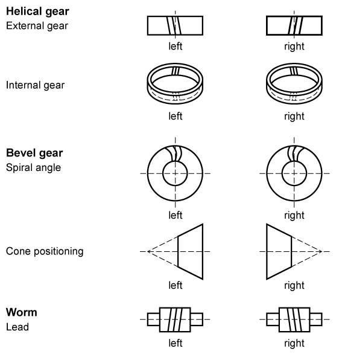

|
|
|


分度圆螺旋角
以 [°] 输入螺旋角。单击 窗口中的"转换"按钮，可根据基圆螺旋角 βb 或齿顶圆螺旋角 βa 计算该角度。斜齿轮通常比直齿轮产生的噪声小。但它们也有缺点，即会产生额外的轴向力分量。

图 17.3：螺旋角
English Original
Helix angle at reference circle
Enter the helix angle in [°]. Click the Convert button in the window to calculate this angle from the helix angle at base circle βb or from the helix angle at tip circle βa. Helical gear teeth usually generate less noise than spur gear teeth. However, they also have the disadvantage that they involve additional axial force components.
Figure 17.3: Helix angle